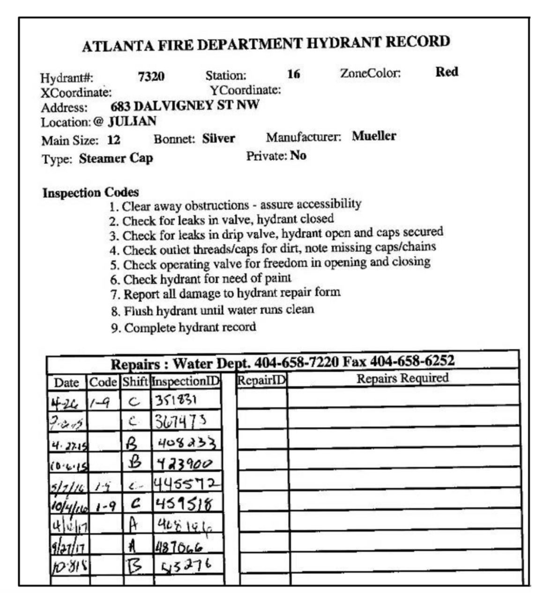

8. Collecting Points Data Using GPS
In this lab, you will use your smart phone to collect coordinates for at least twenty similar features in your neighborhood. I suggest fire hydrants, but you can record the location of anything that is of interest to you including trees, churches, restaurants, bus stops, etc.
For each feature of interest, you will record its coordinates and its physical condition. You can also consider taking photographs of the features. Afterwards, we will display and analyze the data using geospatial software.
Please note that to successfully carry out a GPS data collection project, some amount of pre-planning is necessary. Please read the section on Pre-Planning a GIS Project before getting stared.
Also, please note that While there are many apps that are available free of charge for ield data collection, I strongly encourage you to complete this project using Survey123. This platform smoothly integrates data collection with data vsisualization and data analysis apps on the ArcGIS Platform. Data collected by Survey123 can be immediately passed to ArcGIS Online and other software within the ESRI suite.
8.1. Creating the Survey123 Form
Most surveys use data entry forms for conveniently entering data into the survey’s spreadsheet or database. So, instead of entering data directly into a survey’s spread sheet or database table, users enter data into the form which, in turn, passes the data to the spreadsheet or database table.
While preparing this lab, I came across a fire hydrant data entry form from the Atlanta Fire Department that can be used as a guide for a fire hydrant survey (See illustration below). The form seems easy to recreate, so I will use it as my example for this project. You can do a background reviews of form designs suitable to your data collection project.
In Survey123, forms are created at the Survey123 website, so visit https://survey123.arcgis.com and sign in using your ArcGIS Online organizational account.
After signing in, click on “Create a New Survey”.
You will be presented with the option to use Web Designer or Survey123 Connect. I suggest you start with Web Designer as it is much easier to use compared with Survey123 Connect, which is used for advanced form design. After publishing a survey created by web designer, if you wish, you can edit/modify it using Survey123 Connect, however, the reverse is not true.

Enter a name for the Survey as well as some key words, for example, enter “Fire Hydrant Survey” as the name. You can re-enter “fire hydrant survey” as the tags. Click Create.
The page that appears lets you design the data entry form. Start designing the form by dragging items from the panel to the right to the form on your left. You can also double click on the panel items to add them to the form. Also, note that the form should have all the fields as the source, but the appearance doesn’t have to be exact. You can change things around to make to make the form easy to create in Survey123.
The illustration below shows the beginning of the form. Noticed that I placed a map object unto the form. After placing the map object on the form, I configured it so that it defaults to a location and zoom level of interest. Users will use this map to enter the coordinates of the location of the hydrants. Users can either tap on the location of the hydrant on the map to records the coordinates or they can enter a street address. The points that are entered on this map will eventually be displayed in ArcGIS Online.
After creating and publishing the form, the software generates a URL that can be used to bring up the survey on your cell phone or computer. You can view the form’s URL by clicking on Collaborate in the main menu. The URL for this form is: https://arcg.is/0DuHW00.
8.2. Collecting Data using the Form in a Web Browser
One way to use the form is to simply copy the URL for the form and enter it into a browser to access it. Thereafter, you can perform data entry.
If multiple persons will perform data entry, then you can email each person a copy of the URL of the form for them to access it online and perform data entry.
If the form will be open to the general public, then the form’s URL can even be embedded into a website for people to access and fill out.
8.3. Collecting Data using the Survey123 Web App
Another way that users can interact with your form is for them to download and install the Survey 123 app on their smart phone and use the app to access the form. This approach is useful if the form is to be reused repeatedly, as in a fire hydrant survey where data about hydrants must be repeatedly entered into the form by the same user. To obtain the Survey123 field app, visit one of the stores below and download the app to your phone.
iOS devices - iTunes App Store
Android devices - Google Play
Windows devices - Windows Store
After downloading and installing the app, open the application using the application icon. When the app starts, log in using your ArcGIS Online organization account.
After signing in, the app opens the My Surveys gallery. If this is the first time you are using the app, the gallery appears empty with the message, No surveys on device.
Select Get Surveys. The Survey123 app connects to your ArcGIS organization and searches for surveys to which you have access. Select and download the fire hydrant survey you created.
When the survey download is completed, a notification appears. Select OK then select Back to return to the My Surveys gallery page.
6 The Fire Hydrant Survey now appears in the gallery. Click on “Collect” to open the survey and administer it for a particular hydrant.
Data that is collected by these forms are stored on ESRI’s cloud server from where it can be accessed by ArcGIS Online.
8.4. Viewing the Questionnaire Data in Survey123
Once a form has been filled up, you can view the data at the Survey 123 website. The steps below show how to view the survey data:
Sign in to the Survey 123 website using your ArcGIS organizational account.
Click the thumbnail to open the Overview page for your survey. The survey’s overview page displays information about the survey results.
Click the Analyze tab and explore the results of each question of the survey. Explore the word cloud if you entered more than 20 records.

Click the Data tab and visualize the location of survey items. The submitted survey features are shown on the interactive map that appears while the responses are shown in the attribute table. You may have to zoom in to see the features clearly.
To share the results of your survey, you click either on “Open in Map Viewer” to share it via ArcGIS Online or you can click on Export and save it as CSV, KML, etc. If you choose CSV, KML, etc, these formats can then be imported into ArcGIS Pro or ArcGIS Online.

8.5. Visualizing the Data in ArcGIS Online
ArcGIS Online has powerful tools for visualizing and analyzing data collected by Survey123. To view the Survey data in ArcGIS Online, simply sign in to ArcGIS Online, click on Content, and look for the layer that contains your Survey123 data.
8.6. Deliverables
Submit the URl of the Survey123 form that you created.
Submit the URL of the ArcGIS Online Web map that contains your survey data.